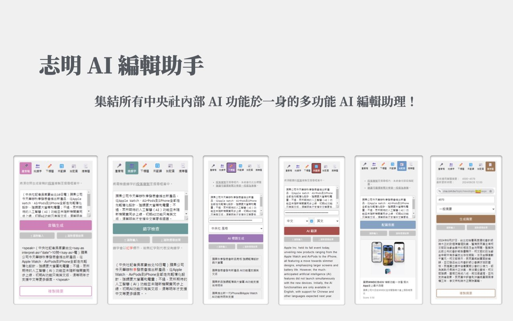

中央社媒體實驗室 · 2024 — 2026CNA Media Lab · 2024 — 2026
編輯室 AI 工具：做同事每天真的會打開的東西Newsroom AI tools people actually open every day
加入中央社的前兩年，我的工作是把生成式 AI 放進編輯的日常流程：下標、錯字、翻譯、配圖、逐字稿、短影音。從訪談編輯的痛點開始，做出原型、上線，再根據使用回饋調整。 My first two years at CNA were about putting generative AI into editors’ daily work — headlines, typo checks, translation, photo matching, transcripts and short video. Each tool started from an editor’s pain point, went live as a prototype, and was tuned on real usage.
- 每日使用Daily use
- 全社近 300 次~300 across CNA
- 同事回饋Feedback
- 逾 90% 認為提升效率90%+ report higher efficiency
- 技術Stack
- Python · FastAPI · Vue 3 · Chrome MV3 · GCP
- 模型Models
- OpenAI · Claude · Gemini
志明 AI 編輯助手Jiming, the AI editor assistant
把社內各種 AI 功能收進一個 Chrome 擴充功能的側邊欄，編輯在發稿系統裡就能直接使用。第一版（2024.09 — 2025.09）由我一人開發，共 8 項功能：
A Chrome side panel that gathers CNA’s AI features where editors already work — inside the publishing system. I built the first version (2024.09 — 2025.09) on my own, with eight features:
- 錯字檢查、標題建議、多語翻譯（中英日印）、配圖推薦
- Typo check, headline suggestions, translation (Chinese, English, Japanese, Indonesian), photo matching
- 音稿、專題摘要與時間軸、YouTube 逐字稿、輿情整理
- Broadcast scripts, feature summaries and timelines, YouTube transcripts, social-listening digests
後端是自建的代理伺服器（FastAPI、Google OAuth、Redis、Cloud Run），管理每位同仁與每個單位的使用額度；另做了外部媒體單位的管理後台。標題生成也做過系統性實驗，發現標題長度會收斂在 20–24 字之間。
Behind it sits a proxy server (FastAPI, Google OAuth, Redis, Cloud Run) that manages quotas per person and per unit, plus an admin console for partner newsrooms. Systematic headline experiments showed generated titles converge on 20–24 characters.

影音 AIVideo AI
- 志明寫 SOTSOT drafter上傳影片，自動產生逐字稿，再生成電視新聞 SOT 稿；每一句都能回溯時間碼並比對引述。FastAPI、Gemini、OpenAI Agents，前端 Vue 3 + Tiptap。（2025.11 — 2026.05）Upload a video, get a transcript, then a TV-news SOT script where every line traces back to its timecode and quote. FastAPI, Gemini, OpenAI Agents; Vue 3 + Tiptap. (2025.11 — 2026.05)
- 短影音製作 pluginShort-video plugin與同事合作的 Claude Code plugin，涵蓋有旁白、無旁白字卡、資訊圖表三條路線，整合 TTS 與 Whisper 字幕對齊。（2026.06 — 09）A Claude Code plugin built with a colleague, covering narrated, title-card and infographic formats with TTS and Whisper subtitle alignment. (2026.06 — 09)
- 外電自動剪輯 PoCWire-footage auto-edit9 階段流程，把外電拍帶自動剪成 80–110 秒的國際焦點短片，以 3 個個案驗證。（2026.05）A nine-stage pipeline that cuts wire footage into 80–110 second international explainers, validated on three cases. (2026.05)
搜尋、NLP 與推薦Search, NLP and recommendation
- 配圖推薦Photo matching入職第一個專案：以 GPT-4o Vision 理解照片、Elasticsearch 檢索，為新聞推薦合適的圖庫照片。（2024.07 起）My first project: GPT-4o Vision plus Elasticsearch to suggest archive photos for a story. (from 2024.07)
- 片庫影片推薦Video matching萃取關鍵影格、以 SSIM 去除重複畫面，再交給模型描述內容。（2024.10 — 2025.02）Keyframe extraction with SSIM de-duplication before model captioning. (2024.10 — 2025.02)
- 斷詞與實體標註Segmentation & NER斷詞、關鍵字與 NER 服務，2026 年加入事件圖譜萃取。Word segmentation, keyword and NER services, with event-graph extraction added in 2026.
- AskCNA多階段 Agent 問答搜尋：先評估問題難度、拆出子主題再檢索，串流回覆，另有結合事實查核資料的模式；作為內部試行服務。（2025.09 — 2026.01）A multi-stage agentic search that grades question difficulty, splits sub-topics, retrieves and streams answers, with a fact-check mode; run as an internal pilot. (2025.09 — 2026.01)
我怎麼做這些工具How I work
從需求訪談開始，找出編輯流程中最花時間的一步，先做出可以試用的版本，上線後再依使用紀錄與回饋決定下一步，而不是一次把功能做滿。
I start from interviews with editors, find the slowest step in their workflow and ship something they can try; usage logs and feedback then decide what comes next, instead of building everything up front.